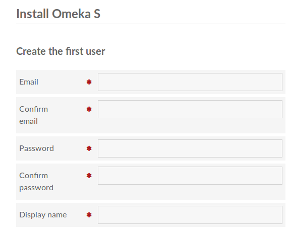
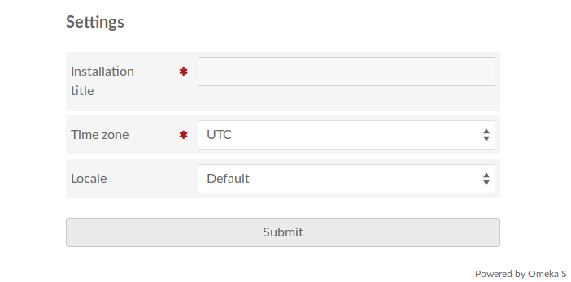

Des instructions de base pour l’installation et la mise à jour à partir de GitHub sont disponibles dans le fichier LisezMoi du référentiel Omeka S github.
Configuration requise
Pour installer Omeka S, vous aurez besoin d’un serveur exécutant les logiciels suivants:
Linux
Apache (avec AllowOverride défini sur "All" et mod_rewrite activé)
MySql, version minimum 5.6.4 (ou MariaDB, version minimale 10.0.5)
PHP, minumum version 7.1, avec extensions PDO, pdo_mysql et xml installées
Facultatif, pour créer des vignettes: ImageMagick version 6.7.5 ou supérieure, l' extension PHP imagickou l' extension PHP gd .
Installation à partir d'un fichier zip publié
NB: Avant d'installer Omeka S, vous devez créer une base de données MySQL et un utilisateur. Omeka S doit avoir une base de données dédiée (vous ne pouvez pas utiliser un préfixe pour une base de données utilisée par un autre système ou une installation Omeka S ou Classic). Pour plus d'informations sur la création d'une base de données et d'un utilisateur, veuillez consulter la documentation de support de votre hébergement ou contactez votre administrateur système.
- Téléchargez la dernière version à partir de la page des versions Ouvrez config / database.ini et ajoutez votre nom d'utilisateur MySQL, votre mot de passe, le nom de la base de données et le nom de l'hôte. L'utilisateur et la base de données doivent être créés avant cette étape.
- Assurez-vous que le répertoire files / est accessible en écriture pour Apache.
- Dans votre navigateur Web, accédez à la page d'administration de votre installation Omeka S (yoururl / admin), où vous pouvez terminer l'installation.
<<<<<<< HEAD Note that you can change all of these later in the User management section of your install. =======
La configuration initiale
Une fois que vous avez correctement installé et configuré le fichier database.ini, vous pouvez accéder à l'emplacement d'administration de votre installation Omeka S. Si votre installation est /myomekas/ alors votre tableau de bord administrateur sera situé à /myomekas/admin
Lors de votre première visite sur le site d'installation, vous devrez entrer des informations sur le premier utilisateur, ainsi que des informations de base sur votre installation. Il y a deux sections sur cette page: Créer le premier utilisateur et Paramètres.
Dans la section Premier Utilisateur, entrez:
- une adresse e- mail et tapez à nouveau pour confirmer.
- confirmez le mot de passe et tapez à nouveau dans la prochaine entrée pour confirmer.
- un nom d'affichage pour l'utilisateur
Notez que vous pourrez toutes les modifier ultérieurement dans la section Gestion de l' utilisateur de votre installation.
[FR] Traduction française - fr-v0.1

Dans la section Paramètres, entrez:
- Un titre d'installation qui s'affichera sur le site d'administration,
- Le fuseau horaire de l'installation (à sélectionner dans la liste déroulante), et
- sélectionnez un environnement local pour la langue du côté administrateur de l'installation.

<<<<<<< HEAD You can changes these at any time in the in the Settings section of your Admin Dashboard
See Configuration Options for information on settings for thumbnail generation, php path, and more.
Vous pouvez les modifier à tout moment dans la section Paramètres de votre Tableau de bord Admin Voir Options de configuration pour plus d'informations sur les paramètres de génération de vignettes, le chemin d'accès php, etc.
Mise à jour
- Téléchargez la dernière version à partir de la page des versions
- Faites une copie de votre répertoire
/config. Vous devrez restaurer vos fichierslocal.config.phpetdatabase.inià partir de cette copie. - Faites une copie de vos répertoires
/moduleset/themes. - Faites une copie de votre répertoire
/files. Supprimez tous les fichiers Omeka S et remplacez-les par les fichiers du fichier zip mis à jour. Remplacez les fichiers/config/local.config.phpet/config/database.iniet les répertoires/modules,/themes,/filespar ceux que vous avez copié. Dans votre navigateur Web, accédez à la page d'administration de votre site (votreurl / admin) et exécutez les migrations nécessaires.
[FR] Traduction française - fr-v0.1
Installer sur Windows ou Mac OS (développement de base uniquement)
Omeka S ne prend pas en charge les systèmes d’exploitation propriétaires ou à sources fermées. Cependant, à des fins de développement de base ou pour une formation rapide, Omeka peut fonctionner avec WAMP, MAMP ou des outils similaires.
<<<<<<< HEAD
Follow the standard installation instructions. You will need to make the following configuration changes to the file config/local.config.php to work.
=======
Suivez les instructions d'installation standard. Vous devrez apporter les modifications de configuration suivantes au fichier config/local.config.php pour fonctionner.
[FR] Traduction française - fr-v0.1
Tout d’abord, il peut être nécessaire de définir le chemin php si php. Editez le fichier de configuration et remplissez le phpcli_path à la ligne 12 avec le chemin approprié pour votre système d'exploitation.
<<<<<<< HEAD
Second, you need to configure Omeka S to use the thumbnailer which is available in your server. Edit the local.config.php file with the following, based on what is available for your system:
=======
Deuxièmement, vous devez configurer Omeka S pour utiliser le visualiseur de vignette disponible sur votre serveur. Editez le local.config.pgp avec les éléments suivants, en fonction de ce qui est disponible pour votre système:
[FR] Traduction française - fr-v0.1
- remplacez le générateur de vignette par défaut
Omeka\File\Thumbnailer\ImageMagickparOmeka\File\Thumbnailer\Gd. - remplacez le générateur de vignette par défaut
Omeka\File\Thumbnailer\ImageMagickparOmeka\File\Thumbnailer\Imagicket activez Imagick dans le fichierphp.inide votre serveur via l'interface d'administration du serveur ou directement dans le fichier. - conservez le générateur de vignette par défaut, mais installez l'outil de ligne de commande
imagemagicket définissez son répertoire dansimagemagick_dir. Pour installer imagemagick, consultez la documentation de votre serveur.
GD est une bibliothèque graphique de base installée par défaut avec PHP. Il peut créer des vignettes uniquement pour les formats d'image courants (jpeg, gif, png). Imagick et ImageMagick sont la même bibliothèque et peuvent créer des vignettes pour plus de 200 formats. La différence est que le premier est intégré à php et généralement plus ancien que la version en ligne de commande.